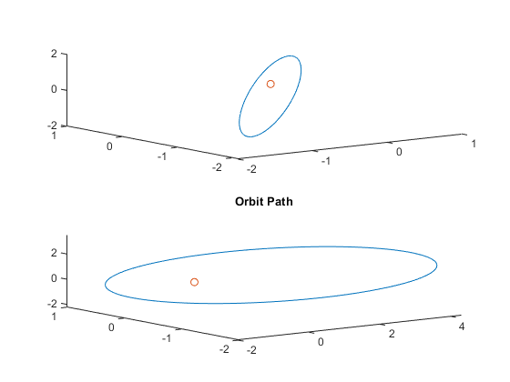

Contents
Homework 2 Orbital Brian Trybus
clear
Problem 2
mu = 1;
Tspan = [0,17];
r = [-1,-1.8,1]';
r_dot = [0.3,0.3,0.4]';
initail = [r;r_dot];
tol = odeset('Reltol',10^-12,'AbsTol',10^-12);
[t,pos] = ode45(@(time,X)BodyEOM(time,X,mu),Tspan,initail,tol);
Tspan = [0,45];
r = [2.4,-.24,-2]';
r_dot = [0.5,-0.2,0.2]';
initail = [r;r_dot];
tol = odeset('Reltol',10^-12,'AbsTol',10^-12);
[t1,pos1] = ode45(@(time,X)BodyEOM(time,X,mu),Tspan,initail,tol);
figure(1)
subplot(2,1,1);
plot3(pos(:,1),pos(:,2),pos(:,3));
hold on
scatter3(0,0,0)
subplot(2,1,2);
plot3(pos1(:,1),pos1(:,2),pos1(:,3));
hold on
scatter3(0,0,0)
title("Orbit Path")

Problem 3
clear
mu =1;
r = [3;2;1];
rdot = [-0.2,0.4,0.4]';
opa = VecECI2OP(r,rdot,mu)
r = [-2.5;-1.7;-2.5];
rdot = [0.3,-0.3,0.4]';
opb = VecECI2OP(r,rdot,mu)
r = [1.5;1;0.8];
rdot = [-0.5,-0.3,-0.2]';
opc1 = VecECI2OP(r,rdot,mu)
r = [0.4819;0.2782;0];
rdot = [-0.5392,1.6132,0]';
Cp_n = M3(170*(pi/180))*M1(90*(pi/180))*M3(200*(pi/180));
r = Cp_n'*r;
rdot = Cp_n'*rdot;
opc2 = VecECI2OP(r,rdot,mu)
Problem 4
clear
t = 1e-3;
n = pi;
e = (1/3);
M = n*t;
error = 1.e-9;
if M < pi
E = M + e/2;
else
E = M - e/2;
end
ratio = 1;
i = 1;
while abs(ratio) > error
ratio = (E - e*sin(E) - M)/(1 - e*cos(E));
delta(i) = ratio;
E = E - ratio;
Earry(i) = E;
f(i) = 2*atan((sqrt((1+e)/(1-e)))*tan(E/2));
i = i + 1;
end
Problem 5
clear
r = [7642;170;2186];
r_dot = [0.32;6.91;4.29];
initail = [r;r_dot];
mu = 3.986*(10^5);
Tspan = [0,13000];
tol = odeset('Reltol',10^-9,'AbsTol',10^-9);
[t5,pos5] = ode45(@(time,X)BodyEOM(time,X,mu),Tspan,initail,tol);
op5 = VecECI2OP(r,r_dot,mu);
a = op5(1);
e0 = op5(2);
Omega = op5(4);
i = op5(3);
w = op5(5);
n = sqrt(mu/(a^3));
p = a*(1-e0^2);
Cp_n = (M3(w)*M1(i)*M3(Omega));
for i = 1:length(t5)
M = n*t5(i);
E = kepler_E(e0,M);
f = 2*atan((sqrt((1+e0)/(1-e0)))*tan(E/2));
R = a*(1-(e0*cos(E)));
rp = R*[cos(f);sin(f);0];
rp_dot = (sqrt(mu/p))*[-sin(f);(e0+cos(f));0];
rK(i,1:3) = Cp_n*rp;
rK(i,4:6) = Cp_n*rp_dot;
h(i,1:3) = (cross(rK(i,1:3),rK(i,4:6)))';
E(i) = (1/2)*dot(rK(i,4:6),rK(i,4:6)) - (mu/norm(rK(i,1:3)));
e(i) = norm((1/mu)*(cross(rK(i,4:6),h(i,1:3))-(mu*rK(i,1:3)/norm(rK(i,1:3)))));
H(i) = norm(h(i,1:3));
end
figure(2)
subplot(2,2,1)
plot3(rK(:,1),rK(:,2),rK(:,3));
hold on
scatter3(0,0,0)
title("Orbit Path")
subplot(2,2,2)
plot(t5,H)
title("Angular Momentum")
xlabel('time[sec]')
ylabel('Angular Momentum[(kgkm^2)/sec]')
subplot(2,2,3)
plot(t5,E)
title("Energy")
xlabel('time[sec]')
ylabel('Energy[kJ/kg]')
subplot(2,2,4)
plot(t5,e)
title("Eccentricity")
xlabel('time[sec]')
ylabel('Eccentricity')
figure(3)
for i = 1:length(t5)
h(i,1:3) = (cross(pos5(i,1:3),pos5(i,4:6)))';
E(i) = (1/2)*dot(pos5(i,4:6),pos5(i,4:6)) - mu/norm(pos5(i,1:3));
e(i) = norm((1/mu)*(cross(pos5(i,4:6),h(i,1:3))-(mu*pos5(i,1:3)/norm(pos5(i,1:3)))));
H(i) = norm(h(i,1:3));
end
subplot(2,2,1)
plot3(pos5(:,1),pos5(:,2),pos5(:,3));
hold on
scatter3(0,0,0)
title("Orbit Path")
subplot(2,2,2)
plot(t5,H)
title("Angular Momentum")
xlabel('time[sec]')
ylabel('Angular Momentum[(kgkm^2)/sec]')
subplot(2,2,3)
plot(t5,E)
title("Energy")
xlabel('time[sec]')
ylabel('Energy[kJ/kg]')
subplot(2,2,4)
plot(t5,e)
title("Eccentricity")
xlabel('time[sec]')
ylabel('Eccentricity')
Functions used
function op = VecECI2OP(r,rdot,mu)
h = cross(r,rdot);
k = [0 0 1]';
i = atan2(norm(cross(k,h)),dot(k,h));
n = cross(k,h);
ihat = [1,0,0]';
Omega = atan2(norm(cross(ihat,n)),dot(ihat,n));
e = (1/mu)*(cross(rdot,h)-(mu*(r/norm(r))));
w = atan2(norm(cross(n,e)),dot(n,e));
p = (norm(h)^2)/mu;
a = p/(1-(norm(e)^2));
f = atan2(norm(cross(e,r)),dot(e,r));
op = [a norm(e) i Omega w f];
end
function dsdt = BodyEOM(time,state,mu)
r = state(1:3);
r_dot = state(4:6);
R = norm(r);
A = (-mu/(R^3))*r;
dsdt = [r_dot; A];
end
function out = M1(a)
out = [1,0,0;0,cos(a),sin(a);0,-sin(a),cos(a)];
end
function out = M2(b)
out = [cos(b),0,-sin(b);0,1,0;sin(b),0,cos(b)];
end
function out = M3(c)
out = [cos(c),sin(c),0;-sin(c),cos(c),0;0,0,1];
end
function E = kepler_E(e, M)
error = 1.e-9;
if M < pi
E = M + e/2;
else
E = M - e/2;
end
ratio = 1;
while abs(ratio) > error
ratio = (E - e*sin(E) - M)/(1 - e*cos(E));
E = E - ratio;
end
end
opa =
5.7299 0.4281 0.7383 0.2783 0.5365 0.9449
opb =
5.8888 0.6104 0.8560 1.7439 0.6618 1.6662
opc1 =
1.5772 0.9955 1.1362 0.3805 2.7512 3.0684
opc2 =
1.4262 0.6300 1.5708 2.7925 2.9672 0.5234